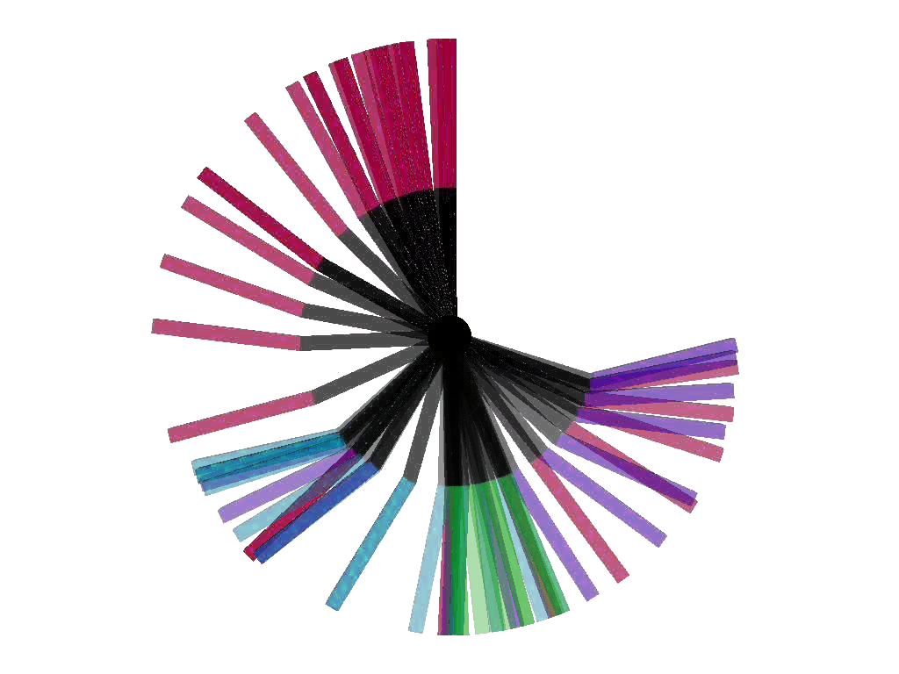

Abstract¶
We propose a method that enables kinodynamic planning in the configuration space (of dimension n) instead of the state space (of dimension 2n), thereby potentially cutting down the complexity of usual kinodynamic planning algorithms by an exponential factor. At the heart of this method is a new technique – called Velocity Interval Propagation – which, given a path in the configuration space and an interval of reachable velocities at the beginning of that path, computes exactly and efficiently the interval of all the velocities the system can reach after traversing the path while respecting the system kinodynamic constraints. Combining this technique with usual sampling-based methods gives rise to a family of new motion planners that can appropriately handle kinodynamic constraints while avoiding the complexity explosion and, to some extent, the conceptual difficulties associated with a move to the state space

Content¶
| Paper | |
| Supplementary material | |
| Interactive poster | |
| Code repository | |
| Benchmark data | |
| 10.15607/RSS.2013.IX.052 |
BibTeX¶
@inproceedings{pham2013rss,
title = {Kinodynamic Planning in the Configuration Space via Admissible Velocity Propagation},
author = {Pham, Quang-Cuong and Caron, St{\'e}phane and Nakamura, Yoshihiko},
booktitle = {Robotics: Science and System},
year = {2013},
month = jun,
doi = {10.15607/RSS.2013.IX.052},
}
Discussion ¶
Feel free to post a comment by e-mail using the form below. Your e-mail address will not be disclosed.